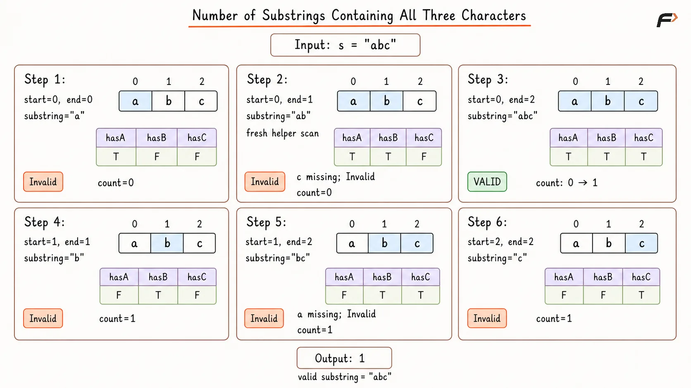
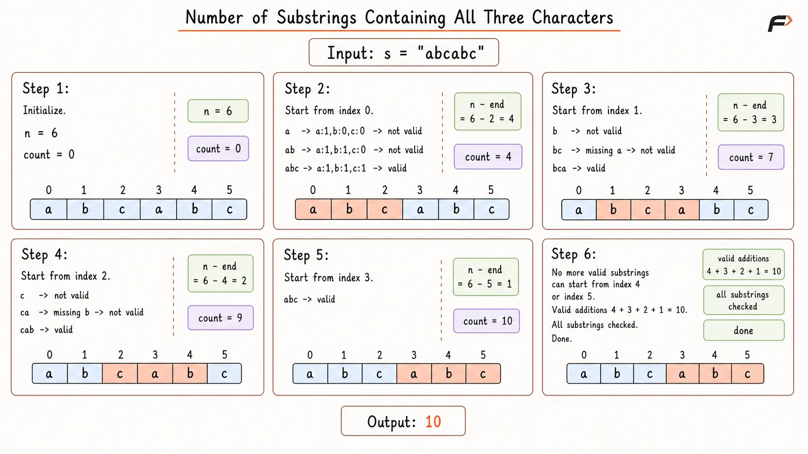
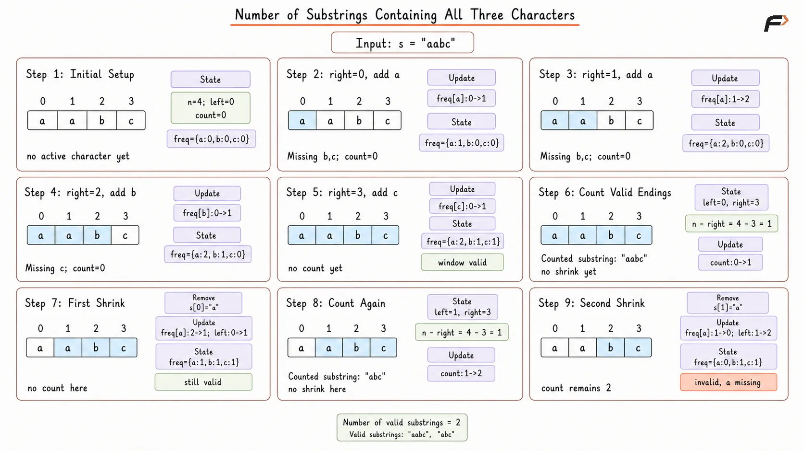

Count Substrings Containing All Three Characters a, b and c
Given a string s consisting only of characters 'a', 'b', and 'c', return the number of substrings that contain at least one occurrence of all three characters.
A substring is a contiguous part of a string.
Example 1
Input: s = "abcabc"
Output: 10
Explanation: The substrings containing at least one 'a', one 'b', and one 'c' are counted. There are 10 such substrings.
Example 2
Input: s = "aaacb"
Output: 3
Explanation: The valid substrings are "aaacb", "aacb", and "acb".
Example 3
Input: s = "abc"
Output: 1
Explanation: The only valid substring is "abc".
Brute Force Approach
Every possible substring can be checked independently to see whether it contains a, b, and c.
For each selected range, scan its characters and track whether all three required characters appear. This guarantees that every valid substring is counted, but overlapping ranges are repeatedly scanned.
Algorithm
The size of the string is stored in n. If n is less than 3, 0 is returned because a substring containing all three characters cannot exist.
A helper function is used to check whether a substring from start to end contains all three characters. Inside this helper, three boolean variables are maintained to track whether 'a', 'b', and 'c' are present.
The helper scans the substring from start to end. Whenever 'a', 'b', or 'c' appears, the corresponding boolean value is marked as true.
After scanning the substring, the helper returns true only if all three boolean values are true. This means the substring contains at least one occurrence of each required character.
Two loops are used to generate every possible substring. The first loop chooses the starting index start, and the second loop chooses the ending index end.
For every substring, the helper is called. If the helper returns true, count is increased by 1. After all substrings are checked, count is returned.
Dry Run

Number of Substrings Containing All Three Characters Brute Force Approach Dry Run.png
Solution
#include <bits/stdc++.h>
using namespace std;
class Solution {
private:
// Checks whether the selected substring contains a, b, and c.
bool containsAllThree(const string& s, int start, int end) {
bool hasA = false;
bool hasB = false;
bool hasC = false;
// Scan the complete selected substring.
for (int i = start; i <= end; i++) {
if (s[i] == 'a') {
hasA = true;
}
else if (s[i] == 'b') {
hasB = true;
}
else if (s[i] == 'c') {
hasC = true;
}
}
return hasA && hasB && hasC;
}
public:
// Counts all substrings containing at least one a, b, and c.
long long numberOfSubstrings(string s) {
int n = s.size();
// At least three characters are required.
if (n < 3) {
return 0;
}
long long count = 0;
// Choose every possible starting position.
for (int start = 0; start < n; start++) {
// Choose every possible ending position.
for (int end = start; end < n; end++) {
// Count the substring when all three characters exist.
if (containsAllThree(s, start, end)) {
count++;
}
}
}
return count;
}
};
int main() {
string s = "abcabc";
Solution solution;
cout << solution.numberOfSubstrings(s) << endl;
return 0;
}Complexity Analysis
Time Complexity: O(N³), where N is the length of the string. There are O(N²) possible substrings, and checking each substring can take O(N) time.
Space Complexity: O(1), because only three boolean variables are used to track the presence of 'a', 'b', and 'c'.
Better Approach
Instead of rescanning each substring, fix a starting index and build the range by moving end to the right while maintaining frequencies of a, b, and c.
Once the first valid range is found, every later ending position for the same start is also valid. Therefore, all n - end such substrings can be counted together.
Algorithm
The size of the string is stored in n. If n is less than 3, 0 is returned because no valid substring can exist.
A variable count is initialized with 0. This stores the total number of substrings that contain all three characters.
The string is traversed using start as the starting index. For every start, a frequency array of size 3 is created to store the count of 'a', 'b', and 'c' in the current substring.
The end pointer moves from start to the end of the string. For every s[end], its frequency is increased in the array.
After adding a character, we check whether the frequencies of 'a', 'b', and 'c' are all greater than 0. If yes, the current substring contains all three characters.
Once the first valid substring is found for a fixed start, n - end is added to count because every longer substring starting from the same start will also be valid. Then the loop stops for this start. After all starting positions are checked, count is returned.
Dry Run

Number of Substrings Containing All Three Characters Better Approach Dry Run.png
Solution
#include <bits/stdc++.h>
using namespace std;
class Solution {
public:
// Counts valid substrings by expanding from every starting index.
long long numberOfSubstrings(string s) {
int n = s.size();
// At least three characters are required.
if (n < 3) {
return 0;
}
long long count = 0;
// Fix every index as a possible starting position.
for (int start = 0; start < n; start++) {
vector<int> frequency(3, 0);
// Expand until the first valid substring is found.
for (int end = start; end < n; end++) {
frequency[s[end] - 'a']++;
// All later endings will also remain valid.
if (
frequency[0] > 0 &&
frequency[1] > 0 &&
frequency[2] > 0
) {
count += n - end;
break;
}
}
}
return count;
}
};
int main() {
string s = "abcabc";
Solution solution;
cout << solution.numberOfSubstrings(s) << endl;
return 0;
}Complexity Analysis
Time Complexity: O(N²), where N is the length of the string. For every starting index, the ending index may move toward the right until a valid substring is found.
Space Complexity: O(1), because only a fixed-size frequency array of size 3 is used.
Optimal Approach
A sliding window reuses the current range instead of restarting from every index. Expand right until the window contains a, b, and c.
For every valid window [left...right], all n - right substrings beginning at left and ending at right or later are valid. Then move left forward while the window remains valid to count substrings from additional starting positions.
That keeps the reasoning compact while still explaining why n - right is added and why shrinking works.
Algorithm
The size of the string is stored in n. If n is less than 3, 0 is returned because no substring can contain all three characters.
A frequency array of size 3 is created to store the counts of 'a', 'b', and 'c' inside the current window.
Two variables are initialized: left is set to 0 to represent the left boundary of the window, and count is set to 0 to store the number of valid substrings.
The right pointer moves from 0 to n - 1. For every s[right], the corresponding frequency is increased because this character is now included in the current window.
Whenever the window contains all three characters, it is valid. At this point, n - right is added to count because every substring starting from left and ending from right to n - 1 will also be valid.
After counting those substrings, s[left] is removed from the frequency array and left is moved one step forward. This shrinking is repeated while the window still contains all three characters. After the traversal ends, count is returned.
Dry Run

Number of Substrings Containing All Three Characters Optimal Approach Dry Run.png
Solution
#include <bits/stdc++.h>
using namespace std;
class Solution {
public:
// Counts valid substrings using a sliding window.
long long numberOfSubstrings(string s) {
int n = s.size();
// At least three characters are required.
if (n < 3) {
return 0;
}
vector<int> frequency(3, 0);
int left = 0;
long long count = 0;
// Expand the window by moving the right boundary.
for (int right = 0; right < n; right++) {
frequency[s[right] - 'a']++;
// Shrink while the current window contains all three characters.
while (
frequency[0] > 0 &&
frequency[1] > 0 &&
frequency[2] > 0
) {
// Every later ending gives another valid substring.
count += n - right;
frequency[s[left] - 'a']--;
left++;
}
}
return count;
}
};
int main() {
string s = "abcabc";
Solution solution;
cout << solution.numberOfSubstrings(s) << endl;
return 0;
}Complexity Analysis
Time Complexity: O(N), where N is the length of the string. Every character is added once by the right pointer and removed at most once by the left pointer.
Space Complexity: O(1), because only a fixed-size frequency array of size 3 is used.[div-id:tuf-plus-ad-4]
FAQs
Q1. Why do we add n - end in the better approach?
Once a substring from start to end contains all three characters, every longer substring starting from the same start will also contain all three characters. So, all of them can be counted together.
Q2. Why do we add n - right in the optimal approach?
If the current window from left to right is valid, then all substrings starting at left and ending at right or after right are valid. There are n - right such substrings.
Q3. Why is a map not required?
The string contains only three possible characters: 'a', 'b', and 'c'. So, a fixed-size array of size 3 is enough.
Q4. Why does the Optimal Approach keep shrinking after finding a valid window?
A smaller left boundary shift may still leave all three characters inside the window. Each such valid starting position represents another group of n - right valid substrings.
Q5. Why can all n - right substrings be counted together?
Once [left...right] contains a, b, and c, extending its right boundary cannot remove any of them. Therefore, every ending position from right through n - 1 forms a valid substring.